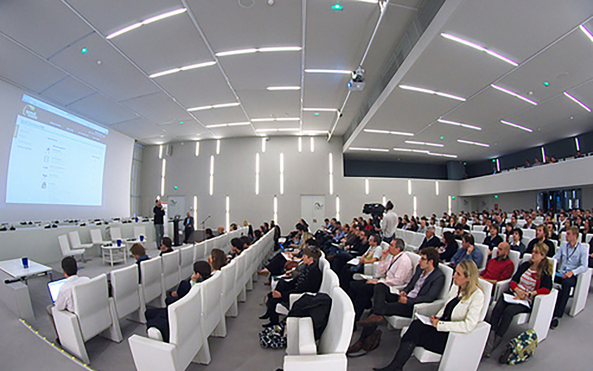

Most college-bound males, regardless of race/ethnicity, have a positive opinion of computing and computer science as a career or a possible major. College-bound females are significantly less interested than boys are in computing; girls associate computing with typing, math, and boredom. College-bound African American and Hispanic teens, regardless of gender, are more likely than their white peers to be interested in computing, although for girls the overall interest is extremely low. Teens interested in studying computer science associate computing with words like “video games,” “design,” “electronics,” “solving problems,” and “interesting.” The strongest positive driver towards computer science or an openness to a career in computing is “having the power to create and discover new things.”
- 
Conferences began to develop codes of conduct, rules and algorithms for people (men, really) to follow.
- If you are subject to or witness unacceptable behavior, or have any other concerns, please notify a community organizer as soon as possible … — Burlington Ruby Conference
- php[architect] is dedicated to providing a harassment-free event experience for everyone and will not tolerate harassment or offensive behavior in any form. — php[architect]
- The Atlanta Java Users Group (AJUG) is dedicated to providing an outstanding conference experience for all attendees, speakers, sponsors, volunteers, and organizers involved in DevNexus (GeekyNerds) regardless of gender, sexual orientation, disability, physical appearance, body size, race, religion, financial status, hair color (or hair amount), platform preference, or text editor of choice. — devnexus